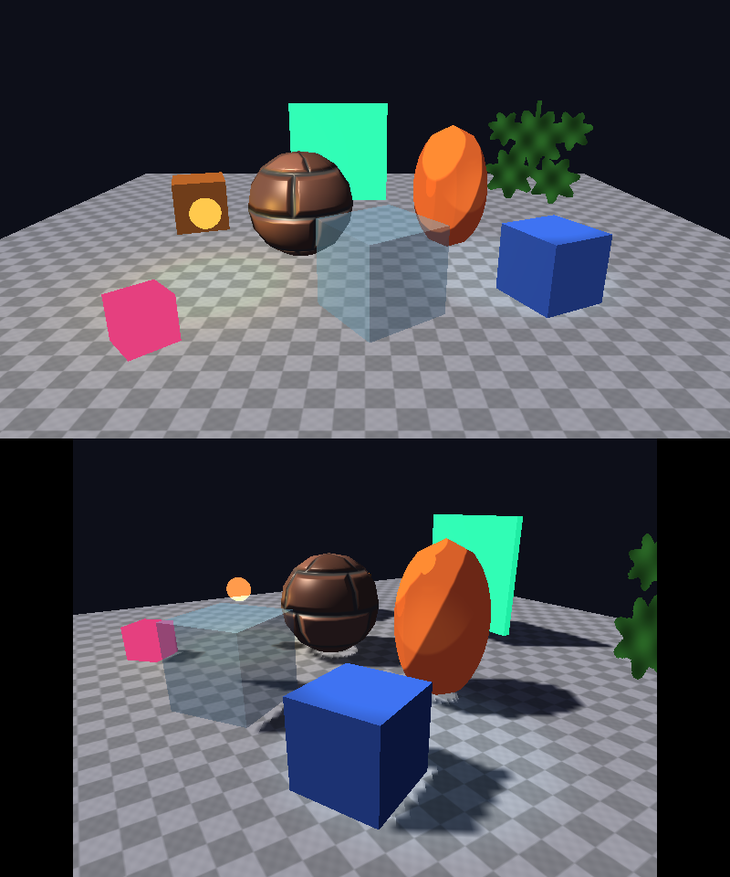
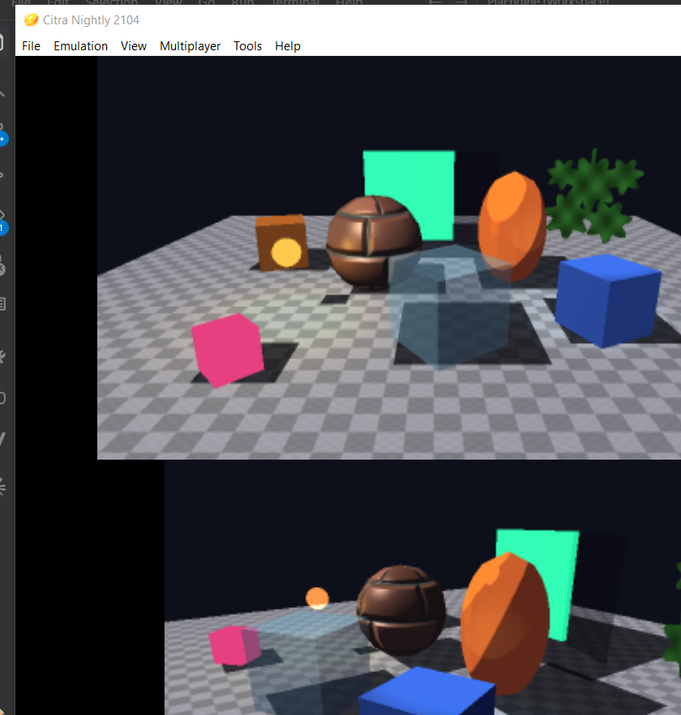
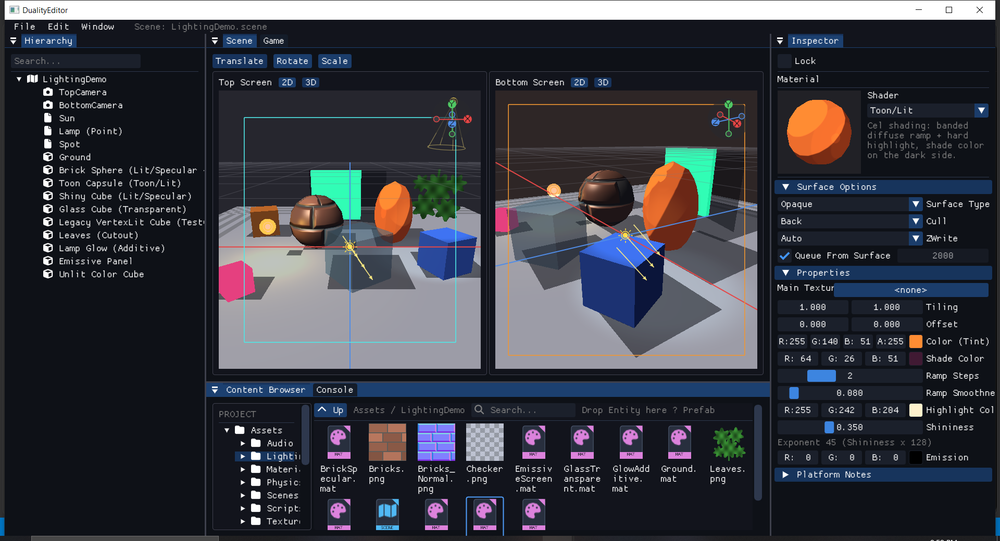

Rendering & UI
Renderer là interface trừu tượng (IRenderer2D/IRenderer3D)
với backend riêng cho mỗi nền tảng — cùng logic vẽ Scene, khác lệnh GPU thật.
Backend theo nền tảng
| Nền tảng | 2D | 3D |
|---|---|---|
| Desktop (Editor + DualityPlayerDesktop) | OpenGLRenderer2D — legacy immediate-mode GL (glBegin/glEnd), không batch | OpenGLRenderer3D — modern GL qua GLShaderProgram/GLVertexArray |
| 3DS | Citro2DRenderer (citro2d) | Citro3DRenderer (citro3d) |
Mỗi frame, mọi entity render qua đúng một trong 4 loop trong
SceneRenderer.cpp's RenderScreen: mesh pass 3D chạy
trước (và clear màn), sprite pass 2D vẽ chồng lên không clear lại, UI vẽ sau
cùng trên hết. Camera projection (Orthographic/Perspective) là "thuộc tính ống
kính", không phải công tắc chọn renderer — cả mesh lẫn sprite luôn cùng vẽ trên
một màn bất kể camera đang chiếu kiểu gì.
CameraComponent
struct CameraComponent {
Screen Screen = Screen::Top;
bool Primary = true;
float Zoom = 1.0f; // chỉ Orthographic
ProjectionType Projection = Orthographic;
float FovDegrees = 60.0f; // chỉ Perspective
float NearPlane = 0.1f, FarPlane = 1000.0f; // chỉ Perspective
};
Camera luôn là entity riêng (Transform + Camera, không kèm
Sprite/MeshRenderer) — tách rời "cái nhìn" khỏi "cái được vẽ", giống quy ước
Unity/Cocos. Mỗi màn có đúng một camera Primary thật sự render
(Scene::GetPrimaryCamera(screen)).
CameraComponent giờ có thêm field Background
(glm::vec4, mặc định {0.08, 0.08, 0.12, 1.0}) — màu
SceneRenderer.cpp's RenderScreen dùng để clear màn
khi màn đó có camera, thay cho màu hardcode cố định trước đây do
Application.cpp/DualityPlayer's Main.cpp
truyền vào (giờ chỉ còn là fallback cho màn không có camera nào). Chi tiết đầy
đủ mọi field CameraComponent: xem
Components Reference.
SpriteRendererComponent
struct SpriteRendererComponent {
glm::vec2 Size{ 32, 32 };
glm::vec4 Color{ 1, 1, 1, 1 };
AssetRef Texture; // rỗng = ô màu đặc
};Vẽ như một quad axis-aligned tại TransformComponent::Translation, xoay theo Rotation.z.
MeshRendererComponent, Material, Mesh
struct MeshRendererComponent {
MeshPrimitive Primitive = Cube; // Cube | Sphere | Plane | Capsule -- dựng thủ tục, không cần asset
std::vector<AssetRef> Materials; // một .mat cho mỗi submesh; rỗng = Unlit trắng (giữ nguyên hình cũ)
AssetRef Mesh; // rỗng = dùng Primitive; có giá trị = mesh OBJ/model import
};
Material (.mat, JSON v2) = một Shader dựng sẵn +
giá trị thuộc tính (tên kiểu Unity: _Color, _MainTex,
_MainTex_ST, _BumpMap, _Cutoff, _SpecColor,
_Shininess, _EmissionColor, _ShadeColor,
_ToonSteps, _ToonSmoothness) + render state (Surface Type, Cull,
ZWrite, Render Queue). GPU PICA200 của 3DS không có fragment shader lập trình được, nên mỗi
shader là một cấu hình pipeline cố định được viết hai lần: GLSL uber-shader trên desktop và
vertex program PICA + tầng TEV + bộ fragment lighting phần cứng (LUT) trên 3DS. Các
đường cong (specular, ramp toon, spot, suy giảm theo khoảng cách) chỉ định nghĩa một lần ở
Renderer/LightingMath.h: 3DS lấy mẫu vào LUT 256 phần tử, desktop tính đúng công thức đó.
| Shader | Hình ảnh | 3DS (PICA200) |
|---|---|---|
Unlit/Color, Unlit/Texture, Unlit/Vertex Color | không ánh sáng | 1 tầng TEV, tắt lighting — rẻ nhất |
Unlit/Transparent, Unlit/Transparent Cutout, Unlit/Additive | alpha blend / alpha test / cộng màu | blend + alpha test phần cứng |
Mobile/VertexLit | Lambert theo đỉnh, chỉ Directional Light chính (= "VertexLit" cũ) | tính trong mesh.v.pica |
Lit/Diffuse | Lambert theo pixel, tối đa 8 light, normal map, emission | fragment lighting, bump map ở texture unit 1 |
Lit/Specular | + Blinn-Phong (_Shininess × 128 = số mũ) | + LUT D0 = pow(N·H) |
Toon/Lit | diffuse theo dải, màu vùng tối, highlight cứng | LUT D1 trên L·N + LUT D0 trên N·H |
.mat cũ (Color + Texture [+ Shading Mode])
được chuyển trong bộ nhớ sang Unlit/Texture hoặc Mobile/VertexLit,
Cull Off, Opaque — hình ảnh không đổi; file chỉ được ghi lại (định dạng v2) khi bạn sửa nó.
Mesh import từ .obj (hoặc model qua Assimp ở Editor) — kéo file
từ Content Browser vào field Mesh. Tangent cho normal map được tạo khi load
(MeshVertex::Tangent, 4 byte), không đổi định dạng file mesh.
Ánh sáng
- Directional Light (Color, Intensity, Cast Shadows), Point Light (Range), Spot Light (Range, Spot Angle, Inner Spot Angle — góc nón đầy đủ như Unity, chiếu theo trục -Z).
- Mỗi object nhận tối đa 8 light (giới hạn phần cứng PICA200, desktop chọn y hệt): Directional trước, sau đó Point/Spot theo độ sáng × suy giảm tại object; light không với tới bounds của object bị bỏ qua.
- Window → Rendering → Lighting: Ambient Color × Intensity của scene (lưu trong file
.scenemục"Lighting"), tổng quan light, kỹ thuật bóng đổ, thống kê frame. - Bóng đổ: desktop dùng shadow map của Directional Light chính (chỉ làm tối phần đóng góp của light đó trên Lit/Toon); 3DS dùng blob shadow chiếu lên Plane.
Scene mẫu SampleProject/Assets/LightingDemo/LightingDemo.scene — trái: desktop (OpenGL), phải: bản 3DS chạy trong Citra; dưới: Material inspector trong Editor.



Hệ UI trong game
Không phải hệ XML+CSS như định hướng dài hạn ban đầu — bản đầu tiên đơn giản:
mỗi widget là UIRectComponent (vị trí/kích thước) ghép với một
component thứ hai theo loại widget, giống cách Unity tách từng mối quan tâm
thành component riêng.
Neo (UIAnchor: TopLeft/TopCenter/TopRight/
MiddleLeft/MiddleCenter/MiddleRight/
BottomLeft/BottomCenter/BottomRight)
trong không gian pixel cố định của một Screen vật lý — không
liên quan camera nào cả.
Panel/Image — cùng quy ước Color/Texture như Sprite Renderer.
Thêm phát hiện click — IsHovered/IsPressed/WasClicked
cập nhật mỗi frame bởi UpdateUIInteractions, đọc từ script
giống GetKeyDown(). Màu paired Image tự đổi theo trạng thái
tương tác (đè lên UIImageComponent::Color), không cần script.
Chỉ phản ứng với pointer đang ở đúng màn của chính nó
(UIRectComponent::Screen) — Top/Bottom có vùng toạ độ local
trùng nhau nên việc này cần InputManager::GetPointerScreen() để phân
biệt.
if (button.WasClicked) { /* xử lý click, đọc trực tiếp component (không qua Behaviour wrapper riêng) */ }OpenGLRenderer2D chưa có font atlas nào). Chưa có 9-slice/border
scaling. Chưa có Visual UI Builder (kéo-thả dựng UI).
Scene view của Editor: grid & gizmo
Panel Scene (không phải Game — xem Editor Panels) vẽ lưới kiểu Unity/Cocos ở cả hai pane, cả 2D lẫn 3D:
- 2D: lưới vẽ bằng lệnh GL thật (
OpenGLRenderer2D::DrawGrid) — cố ý không dùng overlayImDrawListđể lưới nằm sau sprite, không đè lên trên. Một đường trục X đỏ, Y xanh lá qua gốc toạ độ world. - 3D: lưới mặt phẳng XZ tại Y=0, trục X đỏ/Z xanh dương, cộng một orientation gizmo kiểu Blender/Unity ở góc phải trên mỗi pane — bấm vào một đầu trục để snap camera nhìn thẳng theo trục đó.